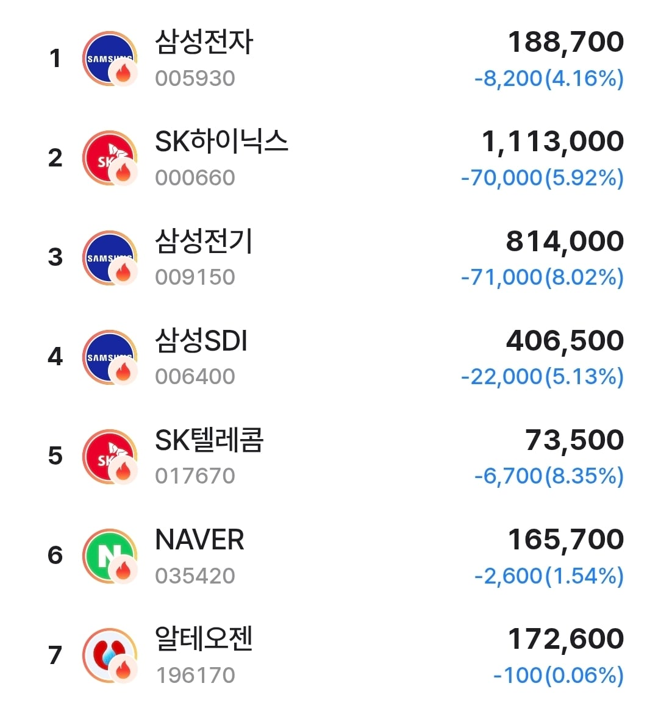

자산이 녹고 있음
어디까지 내려가는 거예요?

자산이 녹고 있음
어디까지 내려가는 거예요?
이글 보기전까지는 내 기분이 좋았음

심전냥이 하닉냥이도 죽었네
얼마까지 알아보고 오셨어요?
여기서 더 내리면 닷컴시절 넘어감
최고점 대비 떨어진
3위 닷컴버블이 -56%
2위 글로벌 금융위기 -57%
1위 IMF -75%
최고점 대비 떨어진
현재 4위 AI 시대 -46% (진행중..)
당분간 주식 금 코인에 물린 투자자들 돈 때문에 내수 경제도 활발하게 안돌아갈거임
나라 망한듯
물린 사람들 때문에 다들 내수 안돌아갈거라고 하던데 그럼 코스피 9천일때는 내수가 개쩔었음?
그럼 반대로 9천일때 내수가 쩔겠음
돈 빼지도 못 하는 -46% 인 지금이 쩔겠음?
돈 왜 못뺌? 물려있어도 뺄수는 있는거 아님?
빼면 마이너스로 손해인데 보통 지능으로는 잃은 돈 만큼 아껴야겠다 하지 않음? 님이 백만원 투자해서 오십만원 잃으면 아껴서 메꿀라고 하지 않음?
진짜 멍청한 질문이다
ㅇㅇ 일단 매주 불금에 족발 시켜서 와인 마시던 친구놈 주식 물리고 긴축경제 들어감
나 역시 좀 물려서 주2회 하던 외식 없애고 두달째 집밥만 먹는 중
미용실도 2주에 한번 가던거 달에 한번 가고 있음
그외에도 많지만 이게 내수 얼어붙은게 아니면 도대체 뭐라는 거냐
물린 애들이 망하는거지 나라가 왜 망함 ㅋㅋㅋ
사람들 돈이 없으니 내수경제가 안돌아 간다는거지
시장에 피가 낭자하다..
크아악
올 초에 현금 확보하려다가 실패하고 어쩌다보니 지금-내년초까지 현금 확보가 되는 상황이라 지금 숨죽이고 바라보고 있는데...기회가 오려나
이렇게 많이빠지면 소비둔화되고 자영업자들도 더 힘들어 지는데ㅜㅜ 나도 힘들고
계좌도 리트 버튼 어디 없냐
바겐세일이닥!
시장에 공포가 만연하고 어쩌구
흠..지금인가..?
애송이 정신줄 단단히 잩잡으라고!
아하하하하햐하하하~!!!
아직도들고있니?